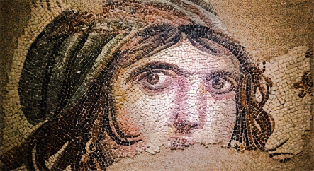

Sanattan Haberler
İngiliz müzeleri ve sanatçılar ülkedeki biyoçeşitlilik kaybıyla savaşmak için The Wild Escape adlı sanat projesini başlattı.
İngiltere'de 500'den fazla müze, ülkedeki biyoçeşitlilik kaybıyla savaşmak için bir sanat projesi başlattı. Proje, National History Museum'un yayınladığı biyoçeşitlilik raporu üzerine başlatıldı. Rapora göre ülke 1970'li yılardan bu yana yaban hayatı ve bitki türlerinin yüzde 47'sini kaybetti.
Zeugma Mozaik Müzesi ziyaretçi rekoru kırdı
Dünyanın en büyük mozaik müzelerinden olan ve başta "Çingene Kızı" mozaiği olmak üzere birçok esere ev sahipliği yapan Zeugma Mozaik Müzesi, 2022'de 439 bin kişiyi ağırlayarak tüm zamanların en yüksek ziyaretçi sayısına ulaştı.
Deprem bölgesinden getirilen tarihi eserler Kırşehir Müzesi'nde korum altına alındı
Kahramanmaraş merkezli ve Türkiye'de 11 ili etkileyen depremler sonrasında, Hatay Arkeoloji Müzesi'ndeki eserlerin bir bölümü Kırşehir Müzesi'nde koruma altına alındı